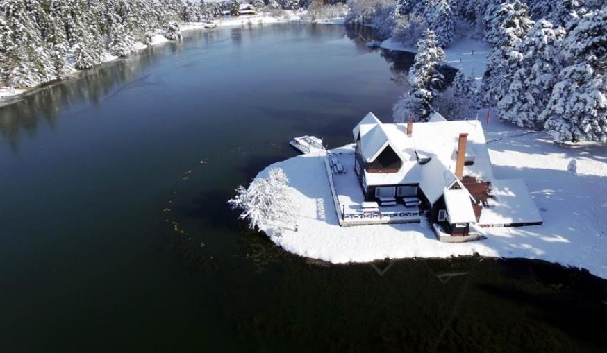

Bolu Hakkında
Bolu, Batı Karadeniz Bölgesi'nde yer alan, doğal parkları, gölleri ve ormanlarıyla ünlü bir şehirdir. Abant Gölü, Yedigöller Milli Parkı ve Göynük gibi doğal güzellikleri ile dikkat çeker.
Gezilecek Yerler
- Abant Gölü
- Yedigöller Milli Parkı
- Göynük
- Bolu Dağı
- Seben Gölü
Turlar
Bolu'da yapabileceğiniz aktiviteler ve turlar:
- Abant Gölü Turu
- Yedigöller Turu
- Doğa Yürüyüşü Turu
- Yaz Kampı Turu
Fiyat Bilgisi
Bolu'da sunulan tur hizmetlerinin ortalama fiyatları:
- Abant Gölü Turu: 350 TL
- Yedigöller Turu: 400 TL
- Doğa Yürüyüşü Turu: 300 TL
- Yaz Kampı Turu: 450 TL